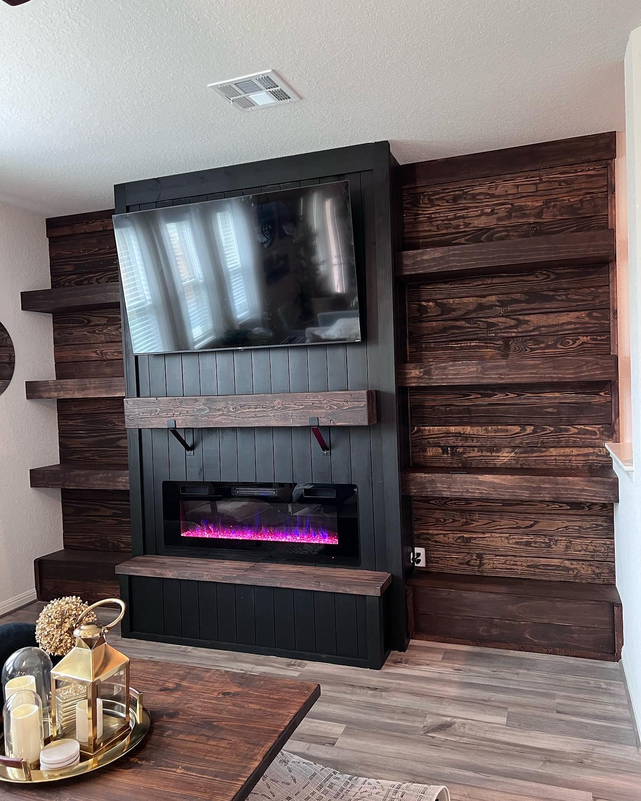
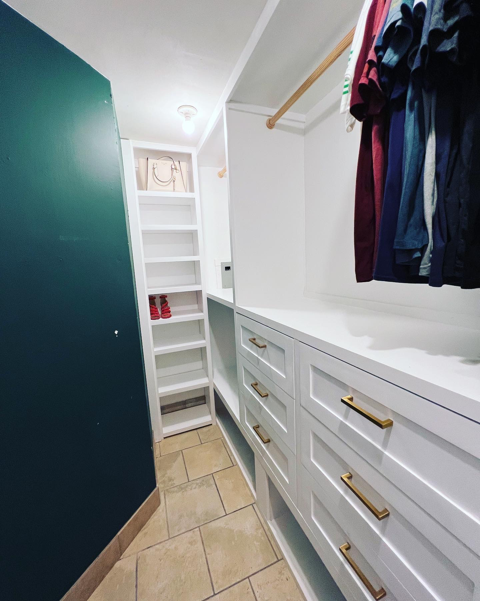
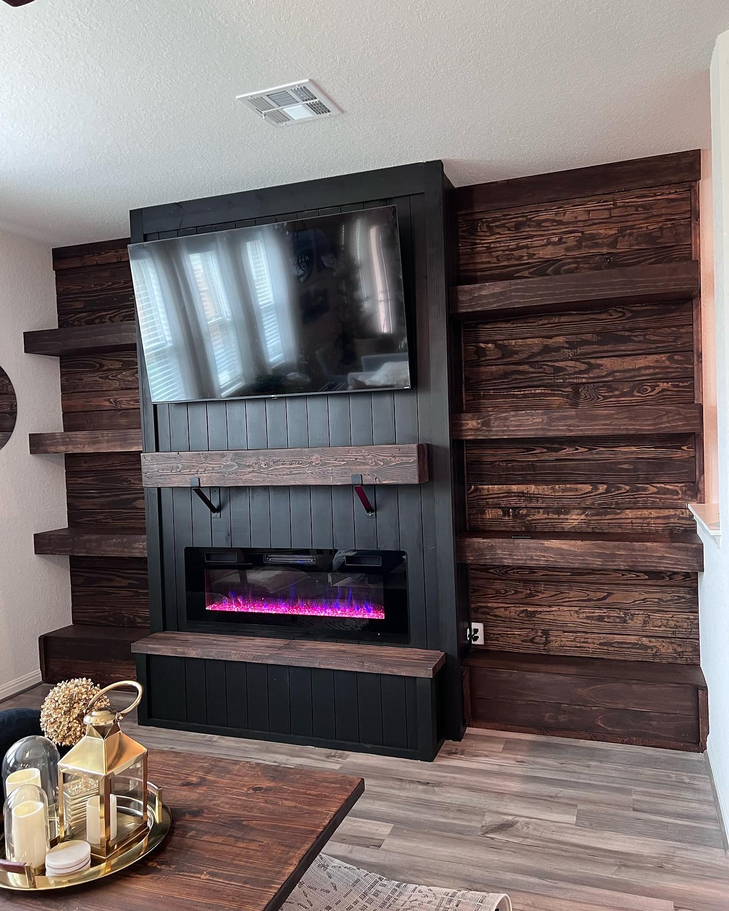
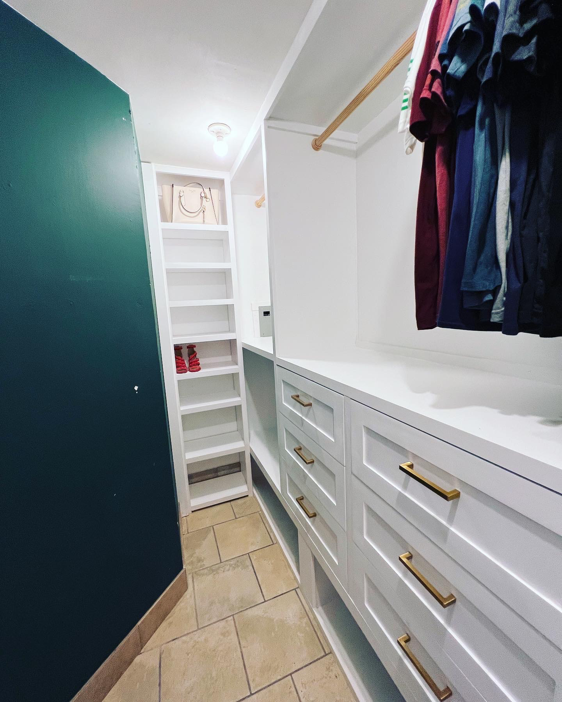
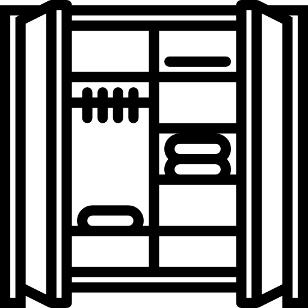
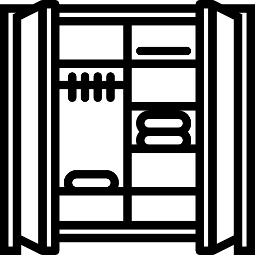

Arts By JP
Something something sdaskndlsalkdjalksd

 
Services we offer
We work on a lot of stuff like kitchens, closets, entertainment centers, barn doors, and other smaller thins like mud-benches, kitchen islands, dressers, nightstands, bed frames and other other things we can certainly figure out like porch stuff, tv things, and other stuff

 
